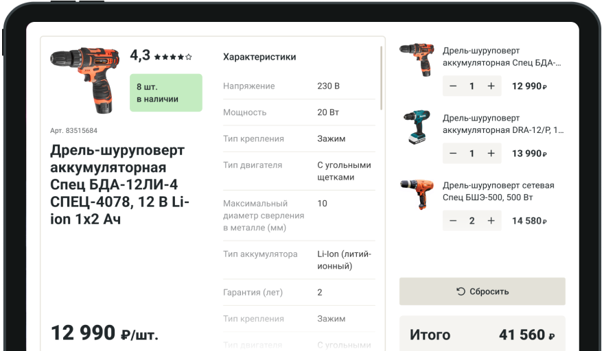

Запуск прайсчекера в магазинах с нуля
Проблема
Покупатели часто задавали сотрудникам одни и те же вопросы: цена, наличие, остатки и характеристики товара. В масштабе магазина это забирало рабочее время, отвлекало сотрудников от основных задач и приводило к переработкам
Результат
Покупатели стали самостоятельно проверять цену, наличие и информацию о товаре, а часть повторяющихся обращений ушла в self-service сценарий
Бизнес-эффект
Решение снизило количество типовых обращений на %, высвободило до часов рабочего времени в день по сети и помогло сократить операционные потери компании на ₽ в месяц